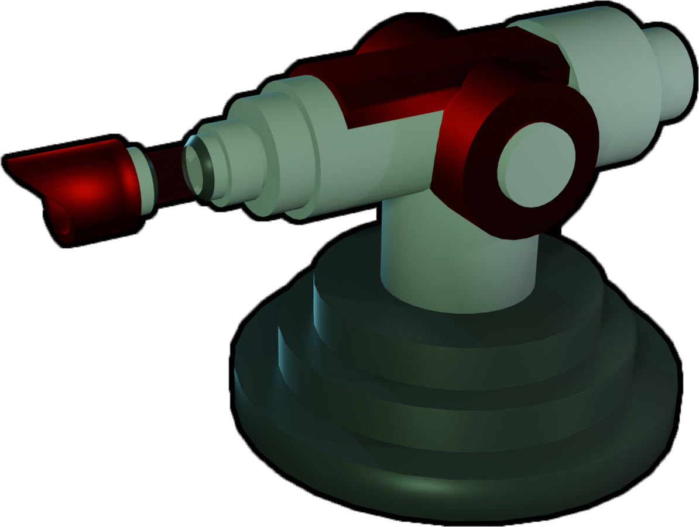
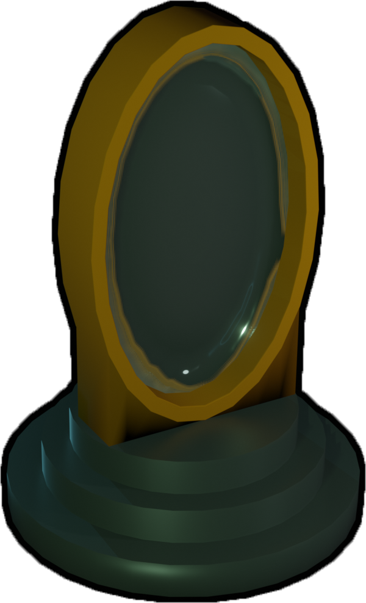
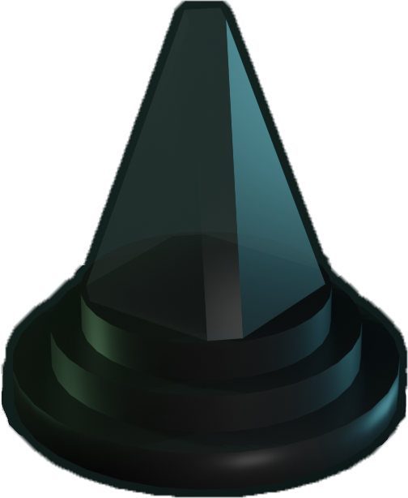

How it works:
The Physical objects have fidusial icons beneath them that is being scanned by the PixelSense which in turn communicates with our in game client whom plays the object into the game world.



An interactive game project made in AGI19 at KTH
”I like the combination of physical interaction to mutate the game” - ForskarFredag user
What is it?
Lumen is an interactive puzzle solving game, powered by Unity, where the objective is to hit a target with a laser with the help of placing physical objects on top of the interactive PixelSense screen.
”Inspirational quote” - devoted user
How it works:
The Physical objects have fidusial icons beneath them that is being scanned by the PixelSense which in turn communicates with our in game client whom plays the object into the game world.
"Inspirational quotes" - devoted user
Making Of Lumen
Demo
Members {% include contributions.html %}